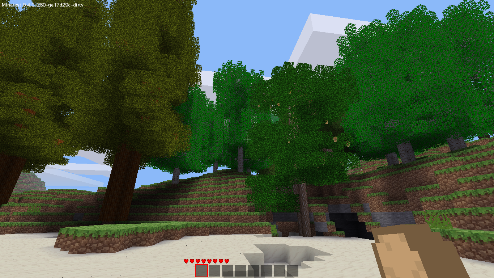
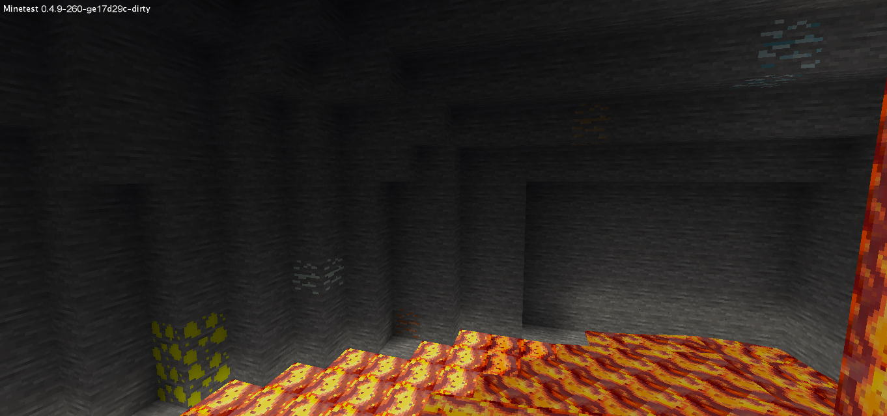
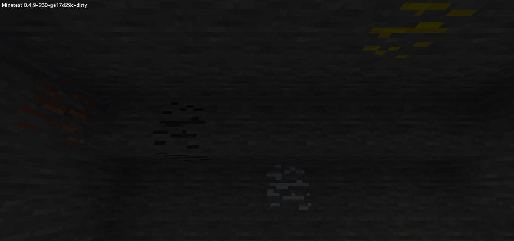

Create a new world, and enable the following mods/modpacks (before entering that world for the first time):

So, you've just spawned in a wonderful world, and you're probably wondering about what to do. Do as you would do on any map: dig a few trees (don't trash the leaves, they will be useful later), gather some cobble, craft a basic stone pick, and build your house... There are a few points you need to be careful about though: make your house big enough, and easy to extend, since the industry will need a lot of room, and, more importantly, if you decide to mine immediately, do not smelt any of your ore yet, except three iron lumps to craft an iron pick.
Now, gather your torches and pickaxes, and let's go down!

Here you can see from left to right:

From left to right:
Other ores I haven't shown:
So, now you know all the ores, gather: TODO
Don't forget that you should not smelt that ore! We will soon see a machine that will be able to produce two ingots for every lump you mine - so if you're too hasty, you will lose metal...
Ok, now you can smelt some of your ore... But don't smelt all of it! Here is what you will need: TODO
The base ingredient of electrical circuits is... wires, of course! So, craft TODO wires using the copper ingots.

To run your circuit, you will also need a switching station - it is the component which will handle all the logic. However, building a switching station is expensive: You will need two wires, two copper ingots, four cast iron ingots and a LV transformer. I'm hearing you saying "Cast iron? What's that?", so let me explain a bit.

In technic, iron has several forms: the first one is wrought iron, which is basically iron, in its ingot form. The second one is cast iron, which is an alloy of iron and carbon, which high carbon content. To get it, just smelt again an ingot of wrought iron; the carbon in the coal will alloy with the iron and form cast iron. There are two other forms of iron, which we will see later.

Ok, so now you have to make a LV transformer to build that switching station. But do you know how a transformer is made? It is basically two coils around an iron core. Therefore, you will need seven wrought iron ingots and two coils to make it.

Finally, the copper coil. Well, it is but fine wire wrapped <... find better word> around some metal ring. To make it you need fine copper wire and TODO iron.


There it is! You now have your first switching station.

"But", you will say, "what can I do with it now?". Well, to tell the truth: nothing. You need to produce energy in order to be able to do something with your brand new switching station. Therefore, we will craft two more components: the generator and the battery box. What those are used for is self-explainatory: the generator produces energy by burning up fuel, and the battery box can store or give energy to comply with the current energy demand and production.
Firstly, the battery box: for that, you will only need a few batteries and TODO. The batteries aren't hard to craft either: you will just need some TODO and some TODO.


Secondly, the generator: you will need TODO

Now, you can make a real circuit. Please note that the switching station needs to be above the wire, whereas the position of other machines relative to the wires has no effect at all.

To use the generator, simply put some fuel in its lower slot, and watch the battery box slowly fill up!
"Ok, it's good, but what do we do now?". Well, we use that energy. Remember that machine I told yu about earlier? Well, we're going to build it. Get some desert stone, take a diamond - hey, if it was cheap, it would not be so powerful! - and craft a grinder.

Now you can connect the grinder to your electric network, and watch it slowly grind one lump into two dusts, which can each be smelted into an ingot. The grinder has a few other uses too: it can for example grind cobble into sand - ever thought glass was too expensive? It is no longer true! -, or TODO into TODO